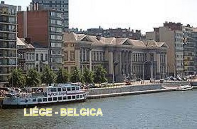
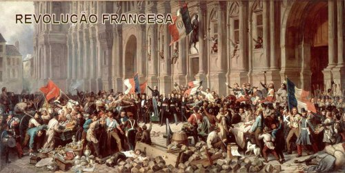
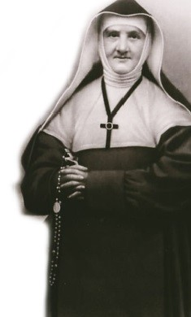
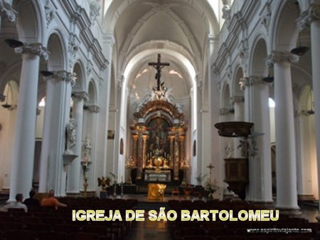

“COM FÉ E
ESPERANÇA”
A FAMÍLIA
Jeanne (Joana) nasceu na cidade
de Liège, na Bélgica, no dia 27 de Fevereiro de 1782. Era uma das filhas da
numerosa e muito religiosa família Haze, sendo
Batizada três dias após
o seu nascimento. Seus pais eram Ludovico Haze e Marguerite Tombeur, e desde tenra
idade, com apenas quatro anos, revelou uma inteligência viva e precoce, pois
admiravelmente aprendeu a ler e a escrever corretamente. O seu pai era professor
de Letras, e tinha prazer de usar o seu tempo livre para ensinar aos seus sete
filhos. E Jeanne Haze, pela sua própria vivacidade, logo se destacou no
aprendizado.
Também, desde criança
acompanhava a sua mãe, que habitualmente frequentava o Mosteiro Cisterciense, a
fim de participar da Santa Missa. Esta realidade conquistou o coração de Jeanne
que se sentiu irresistivelmente atraída pela vida religiosa e pela clausura em
particular. Tanto foi assim, que nos momentos de lazer a sua brincadeira
preferida era vestir-se de freira e conduzir um grupo de moças vestidas como
ela, reproduzindo com fidelidade os ritos que eram celebrados no Mosteiro. Seus
pais possuíam uma confortável situação financeira e exercitavam com convicção e
humildade o Cristianismo, eram religiosos de fato, inclusive o seu Pai era
Secretário do Príncipe Bispo de Hoensbroech.
Com o passar dos anos, no
ambiente familiar começou a transparecer que Jeanne estaria destinada a se
transformar mesmo numa verdadeira Abadessa, porque além de estudar com interesse
as Sagradas Escrituras, se sentia muito confortável num ambiente religioso. E
assim passou uma juventude alegre, cultivando o ideal da sua vida.
A REVOLUÇÃO ATINGIU A BÉLGICA

Todavia, aconteceu
que pelo ano de 1789, quando aquela abominável onda revolucionária invadiu a França,
também os revoltosos Holandeses se agruparam, se tornaram fortes e com os mesmos
modos e idênticas características violentas, deflagraram uma terrível revolução.
O grande problema existente na época estava enraizado na crise mundial motivada
primordialmente pela fome, além da profunda desigualdade social, que gerou em
consequência, uma grande crise econômica causando fome e mortes. E por incrível
que possa parecer, a onda invasora nos Países Baixos era formada por legiões
Holandesas, os próprios vizinhos da Bélgica, que sem nenhuma cerimônia, foi
destruindo tudo, matando e invadindo todas as regiões, da mesma maneira
abominável e cruel, como aquela onda revolucionária que invadiu a França. O
comando revolucionário holandês investiu firme com o objetivo de conquistar a
Bélgica, unindo a Holanda formando um único país. E entre as muitas providências
violentas do comando revolucionário, eles depuseram o Príncipe-Bispo do qual o
pai de Jeanne Haze era Secretário. Em consequência a família ficou obviamente
mais exposta à fúria revolucionária e por isso mesmo, imaginou realizar uma fuga
por segurança, zarpando certa noite em busca de abrigo seguro em Solingen,
próximo a Dusseldorf na Alemanha. Evidentemente uma mudança de país, naquelas
circunstâncias, acarretou também uma série de alterações nos hábitos familiares,
inclusive no próprio modo de viver. Também a Alemanha naquela época estava
mergulhada nos seus próprios problemas, que naturalmente eles também tiveram que
acolher. E por isso, em consequência das muitas dificuldades que encontraram em
1795 o seu pai que já estava com a saúde meio debilitada, veio a falecer. Então,
a família decidiu regressar a Liège. Mas a situação já não era a mesma: o pai
estava morto e os seus bens foram todos confiscados pelos revolucionários
holandeses. Agora era preciso trabalhar para viver e também cuidar da mãe.
Entretanto, nada era fácil naquele tempo de revoluções e guerra. As irmãs saíram
para procurar emprego onde existisse. Jeanne e sua irmã Ferdinanda (Fernanda) decidiram
permanecer em casa, realizando os trabalhos caseiros, rezando e exercitando uma
vida religiosa do tipo missionária, dedicadas ao trabalho e as orações;
alfabetizavam, catequizavam jovens e adultos e atendiam os pobres e doentes,
além de naturalmente dispensar os mais carinhosos e especiais cuidados a própria
mãe.

FALECIMENTO
DA MÃE
Não é difícil entender que a
família atravessou muitas dificuldades, até conseguir engrenar providências num
determinado rumo. Algumas das suas irmãs se casaram. Todavia Jeanne e a
irmã Ferdinanda, não quiseram se casar, porque cultivavam desde criança aquela
esperança interior de seguir a vida religiosa. Entretanto, naquela época, a
escolha de seguir a vida religiosa era um fato praticamente impossível de se
concretizar, por causa das leis anticlericais que o governo revolucionário havia
implantado e estava em plena vigência.
Por outro lado, a mãe das jovens
já estava com sérios problemas de saúde, que elas acompanhavam com seriedade e
preocupação. Todavia, já com a idade avançada, o organismo não resistiu e ela
veio a falecer em 1820. Então as duas irmãs se tornaram “Religiosas em casa”, abandonaram as reuniões familiares, se distanciaram dos
passatempos mais inocente, e só saia de casa para dar assistência a alguma
família necessitada e também, somente para ir a Santa Missa, sem cogitar
de participar de alguma distração, mesmo que ela
viesse favorecer o próprio espírito.
ESCOLA PAROQUIAL

Este afastamento
do mundo não pareceu ser a vontade de DEUS: tanto que o Pároco da Igreja de São Bartolomeu
de Liége, que elas frequentavam, Abade Cloes, assim como o Abade Habets, que era o
Confessor e era o Diretor Espiritual estavam tão plenamente convencidos dessa
verdade, que as convenceu a dirigir e ensinar na Escola Paroquial. E conscientes
deste fato, as duas irmãs abriram a Escola e começaram a trabalhar firme. Mas
aquele era um período negro para a Bélgica, porque estava sobre o abominável
domínio dos revolucionários holandeses e não havia liberdade de ensino. Muito
embora essa Escola Paroquial fosse uma das poucas Escolas que recebeu
autorização provisória dos revolucionários holandeses, haviam exigências a serem
cumpridas; a Escola permaneceu com poucos alunos, quase deserta, porque exigia
pagamento. A Oficina de Bordados que estava instalada ao lado, ia muito bem,
porque era gratuita. Isto acontecia porque naquela época em que a Bélgica estava
em poder dos revolucionários, o comércio e os Colégios funcionavam de maneira
totalmente irregular, e poucas pessoas conseguiam conduzir com êxito os seus
negócios, justamente porque o dinheiro era muito escasso.
Então, em vista da realidade,
as duas irmãs decidiram também enfrentar as condições presente em vista do
movimento revolucionário, porque elas queriam trabalhar, ocupando de maneira
útil o seu tempo. E por isso mesmo, propuseram ao Pároco permitir que a Escola
funcionasse gratuitamente. O Pároco, Abade Cloes prontamente concordou e a
Escola começou a funcionar, apesar da oposição de Guilherme I, Rei dos Países
Baixos (da Holanda), que era contra a liberdade do ensino católico (porque eles
eram protestantes). Assim, mesmo sem as autorizações legais dadas pelos
revolucionários, as salas estavam repletas de crianças, com muito interesse e
cheias de atenção. Por certo, atrás de cada uma daquelas meninas e meninos,
havia uma história de miséria, de pobreza moral e de mal-estar social. E assim,
as duas irmãs enfrentaram um panorama de pobreza e de necessidade que elas nem
imaginavam pudesse existir. Mas com muita fé e amor, mergulharam nesse panorama
de necessidades, buscando aliviá-lo e melhorá-lo da melhor forma possível.


 - PRÓXIMA PÁGINA
- PRÓXIMA PÁGINA
- RETORNA AO ÍNDICE